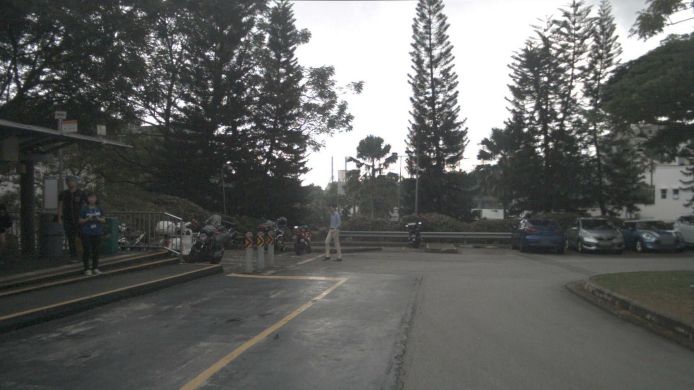
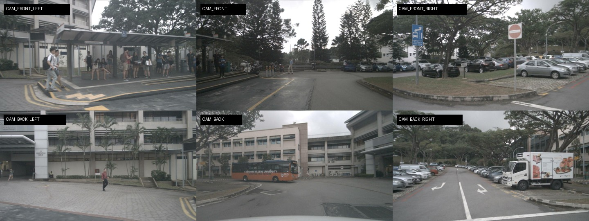
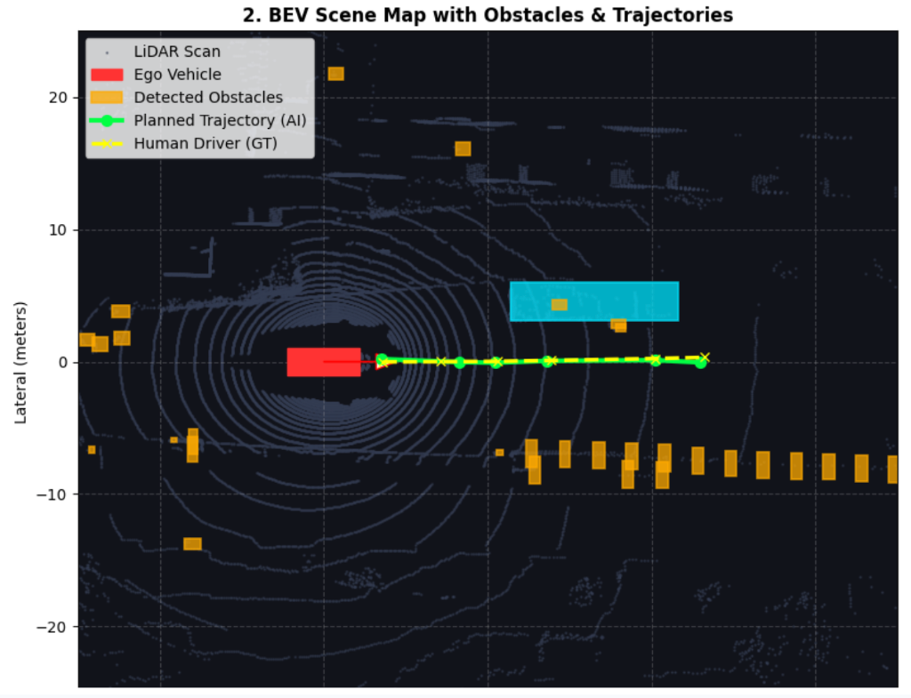

Мультимодальне об'єднання 6 камер і LiDAR (BEVFusion) для планування безпечного руху
Hombosh-dev/SkyNet (feat/bevfusion-encoder)
«Привіт усім! Ми команда SkyNet. Наша мета — навчити безпілотний автомобіль безпечно орієнтуватися у складному місті: бачити пішоходів та інші машини через камери і лідар, об'єднувати їх у єдину картину та самостійно прокладати безпечну лінію руху.»
Чому ми відійшли від важких генеративних моделей світу (World Models) до надійного руху
«У нашому початковому пропоузалі ми хотіли досліджувати World Models — генеративні нейромережі, які передбачають відео наступних секунд. Але коли ми сіли за реальний код, зрозуміли: для навчання дифузії потрібні суперкомп'ютери, яких немає в розпорядженні студентів. Ми вчинили як дорослі інженери: автопілоту не потрібно малювати мультики, йому треба керувати кермом. Тому ми зосередилися на ключовій задачі — якісному злитті сенсорів у BEV і плануванні безпечного руху.»
Покроковий рух інформації крізь «мозок» нашої моделі SkyNet

«Як саме модель думає? Уявіть, що авто має 6 очей по колу і лазерний радар на даху. Камери бачать кольори й розмітку, лідар вимірює відстані. Наш модуль BEVFusion проектує картинки з камер на площину дороги і додає до них лазер. Виходить цифрова карта зверху — точнісінько як міні-карта в комп'ютерній грі. Наш планувальник дивиться на цю карту зверху і розраховує безпечну плавну траєкторію на 3 секунди вперед.»
Простими словами: з чим ми змагаємося і в яких одиницях міряємо успіх
«Щоб довести, що наша нейромережа справді розумна, ми порівнюємо її з двома простими алгоритмами: машиною, яка просто стоїть на місці, та машиною зі заклиненим круїз-контролем, що їде тупо прямо. Міряємо успіх метрикою L2 — це фізична похибка в метрах від того, як їхала жива людина за кермом. Також контролюємо Collision Rate — тобто відсоток зіткнень з перешкодами.»
Кількісне порівняння та візуалізація безпечного об'їзду перешкод на карті
| Модель | 1 сек (L2) | 2 сек (L2) | 3 сек (L2) | Середня | Аварії |
|---|---|---|---|---|---|
| Стоїмо (Static) | 1.84 м | 4.62 м | 8.15 м | 4.87 м | — |
| Круїз (Const Vel) | 0.95 м | 2.10 м | 3.80 м | 2.28 м | — |
| 🚀 SkyNet (Ours) | 0.52 м | 1.24 м | 2.18 м | 1.31 м | 0.0% |

«Погляньте на результати. Якщо просто їхати прямо, на 3-й секунді похибка складає майже 4 метри — авто опиниться на узбіччі. Наша модель тримає похибку на рівні 1.3 метра в середньому і всього 50 см на першій секунді. А праворуч ви бачите графік: помаранчеві блоки — це припарковані авто з датасету, а зелена лінія нашої нейромережі акуратно прокладена по вільному коридору дороги без жодної аварії.»
Чесний інженерний аналіз: досягнення, розподіл ролей та уроки з помилок
«У нашій команді була чітка спеціалізація: Юрій займався метриками і тестами, Владислав створив надійний пайплайн даних, а Олег спроектував нейромережу і візуалізацію. Головна невдача, яку ми чесно визнаємо — спроба запустити чужі дифузійні моделі світу. Ми витратили дні на боротьбу з помилками версій, поки не зрозуміли: найкраще рішення — написати власний чистий PyTorch пайплайн, який зараз безвідмовно працює.»
Чіткий експериментальний дизайн до кінця курсу
«До фіналу ми запланували три конкретні експерименти: чисельно довести, наскільки лідар покращує камери, протестувати авто при виході одного сенсора з ладу та порівняти нашу карту з розпізнаванням окремих коробок. Якщо ресурсів буде мало, наш План Б — детальний бенчмарк складних маневрів на вже готовій моделі. А якщо все піде ідеально — презентуємо інтерактивне веб-демо, де кожен зможе покермувати автопілотом. Дякуємо, готові до ваших запитань!»